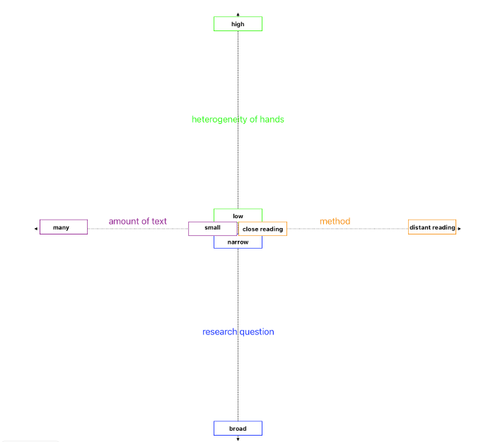

Teaching the use of Automated Text Recognition online. Ad fontes goes ATR
ATR, Online Learning, Digital Literacy, Ad fontes, Paleography
Introduction
Scholars and interested laypeople who want to adequately deal with historical topics or generally extract information from differently structured historical documents need both knowledge of old scripts and methods for analysing complex layouts. Studies of written artefacts are only possible if they can be read at all – written in unfamiliar scripts such as Gothic Cursive, Humanist Minuscule or German Kurrent and sometimes with rather unconventional layouts. Until now, the relevant skills have been developed, for example, by the highly specialised field of palaeography. In the last few years, a shift in practice has taken place. With digital transcription tools based on deep learning models trained to read these old scripts and accompanying layouts on the rise, working with old documents or unusual layouts is becoming easier and quicker. However, using the corresponding software and platforms can still be intimidating. Users need to have a particular understanding of how to approach working with Automated Text Recognition (ATR) depending on their projects aims. This is why the Ad fontes platform (Ad Fontes 2018) is currently developing an e-learning module that introduces students, researchers, and other interested users (e.g. citizen scientists) to ATR, its use cases, and best practices in general and more specifically into how exactly they can use ATR for their papers and projects.
Teaching ATR online – the setting
Digital methods allow a more comprehensive range of users to assign, analyse and interpret sources digitally. This increased availability of data (mainly in the form of digitized images) also protects the original documents. Recognising handwriting with the help of machine learning, known as ATR, has been greatly improved and is becoming increasingly important in various disciplines. Machine learning methods, especially deep learning, have been used for complex evaluation decisions for a number of years.(Muehlberger et al. 2019) For text recognition, especially for recognising handwriting, ATR can achieve far better results than conventional Optical Character Recognition (OCR). However, many non-standardised fonts and layouts will lead to high error rates in the recognition processes, which is why it is essential to clean up data manually. The reading order of individual lines or blocks of text, in particular, poses major challenges for machine transcription tools.
Even ATR itself presents several hurdles; the existing tools are often only intuitive to use to a limited extent. Due to the error rates described above, cleaning up the automatically recognized texts by hand is essential. New users must familiarise themselves with these processes, whether this is on their own at home or in a mentored university or non-academic course. In addition, text recognition itself is only part of the learning curve: to work independently with ATR, it is also necessary to recognise when which form of text and layout recognition makes sense, where it is worth investing time to save more time later on and how to proceed with the output. For these reasons, the ongoing DIZH project PATT (Potentials of Advanced Text Technologies: Machine Learning-based Text Recognition)(UZH 2024) at the University of Zurich and the Zurich University of Applied Sciences is currently developing an open-source e-learning module teaching students, young researchers, and the interested public (in the sense of citizen science) how to use ATR.
Developing an exhaustive learning module is a desideratum, as many researchers working in history or linguistics today want to work with automated text and layout recognition. This complex digital skill set involves the critical categorisation of the machine’s feedback. Although the steps involved in manuscript reading are becoming more efficient, they also require new skills: the work no longer centres on direct engagement with handwriting or print, but on the efficient and task-appropriate correction of the results of automated text and layout recognition, often bringing in the original sources later in for a combined distant and close reading.
The learning module will be published on Ad fontes. This e-learning tool has been helping researchers to prepare for their work in the archive for around 20 years.(Kränzle and Ritter 2004) It consists of exercises and tutorials that introduce researchers to different types of sources and techniques used to transcribe and analyse them. The platform was completely revised in autumn 2018, meets current standards, and is designed to be interactive to provide a good learning experience.(Hodel and Nadig 2019) The platform has attracted a great deal of attention, both within Switzerland and internationally. Ad fontes’ open access policy (modules are published under a Creative Commons license) ensures that the new module will not be hidden behind a paywall or disappear from the WWW after a short time. The Ad fontes e-learning project is based at the Chair of Medieval History of Prof. Dr. Simon Teuscher.
When and how to use ATR for a specific project
Clear target groups and precise learning objectives have been defined for the learning module. As a first step in this direction, we involved experts in the PATT project, defining the following two target groups: First, people with no experience with ATR and the corresponding software and platforms; second, scholars who are already informed about the principles but would like to expand their knowledge systematically and targeted. Our general learning objective is to convey how ATR can be used in a time-efficient, project-specific manner without the recognition process becoming a time waster.
The new e-learning module will consist of three parts: (1) What and why ATR?, (2) When is ATR useful? (3) How do I use ATR precisely for my work? The first chapter leads new users into the topic of ATR, OCR and HTR (Handwritten Text Recognition), deep learning, and the most prominent platforms and software. The second chapter draws up various application scenarios a student could find themselves in by showing best practices. This chapter speaks on the research aims as well as the ‘quality’ and quantity of sources. The third chapter is based on these application scenarios and shows signposts for each of the identified applications.
Chapters 2 and 3 will contain the project’s greatest contributions: The aim is to show, from the perspective of historical scholarship, how the prerequisites of the corpora used and the project’s own objective influence how we can use ATR sensibly. From a research perspective, the usefulness of using ATR in this way can be determined primarily by whether it saves time when cataloguing and reading documents. For example, if there are many different manuscripts in a corpus, it is more or less time-efficient, depending on the number of documents, to find a suitable HTR model with a low error rate or to, alternatively, train a model independently. Correction and production of ground truths is a factor to be considered. The amount of text to be transcribed plays a decisive role at this stage: If only a few pages need to be transcribed (depending on the size of the project, “a few” could be 5 or 100), a manual transcription often makes more sense. What constitutes a “good” transcription also varies depending on the research requirements of the corpus: If only individual sections (e.g., certain persons or concepts) in a larger corpus are of interest for the research question, a transcription with a character error rate (CER) of up to 10% may be sufficient to identify those text passages (e.g., with keyword spotting or full text search). Being able to quickly filter out relevant text passages from imperfectly transcribed text volumes promises a relevant expansion of the source base that can potentially be considered, even for smaller research projects. If your own research question is interested in the entire text – a close-reading – a significantly lower CER is necessary to be able to read the text. Both, when it comes to identifying relevant text passages and when analysing smaller text parts for close reading, the reading skills of ATR users are still indispensable, as specific parts of a digitized image need to be consulted. However, also here ATR can be very useful as a first step in a larger process.
We use a spider diagram model to communicate the various influences on the benefits of ATR for your own project. This provides a visual representation of various factors that influence work with ATR. The four factors we identified are: (1) the heterogeneity of hands, i.e. the variety of handwriting in the texts; (2) the amount of text; (3) the method, this refers to the types of analysis distant reading and close reading on a sliding scale; (4) the research question; respectively its narrowness or breadth.

A high heterogeneity of handwriting could affect the accuracy of ATR as the recognition software might have difficulties to recognize the text consistently. A higher degree of heterogeneity requires a broader model based on larger amount of training data.(Hodel et al. 2021) Large amounts of text often mean that ATR needs to be able to work efficiently and scalable to process large amounts of data. For small amounts of text, the focus could be on the level of detail of the recognition or more manual correction. A close reading would require a more precise and detailed analysis of the texts, which means that the ATR models must be accurate and able to recognize fine details, while distant reading focuses more on the recognition of patterns and trends. A broad research question might require a general analysis of many texts, which means that the ATR models should be versatile and robust (e.g. based on TrOCR models)(Li et al. 2022). A specific research question might mean the ATR must focus on specific details and accurate detections. In summary, working with ATR requires a careful balance between the quantity and type of texts, the desired accuracy and detail of the analysis, and the heterogeneity of the manuscripts to be analysed. The diagram helps to organise these factors visually and to understand their interactions.
Our difficulties
We have already recognised some difficulties for our module and would like to address them briefly: The fast-moving nature of tools and products prevents us from providing precise instructions and means that we can only provide a general introduction to the technology rather than the software(-suites) themselves. Some of this software requires licence or operates on a pay-per-use basis and is therefore not a viable option for everyone. When referring to these products, our open-source teaching module also provides free advertising for paid tools. On the other hand, free tools have disadvantages, which means they are not helpful in all cases. We, therefore, must find a good balance between these two poles. In the technical realisation of our teaching module, we are limited by the options developed during the relaunch. We, therefore, must develop our teaching module within the structures of the existing options. We would furthermore like to set up a FAQ page on ATR, but this requires us to be able to collect and identify these problems and questions systematically.